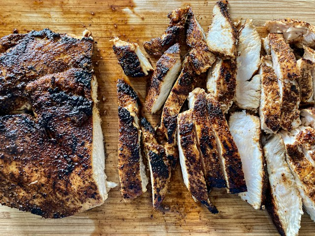

Home
BBQ Chicken Breast

Ingredients
- 1 tbsp olive oil
- 2 tsp Worcestershire sauce
- 1 tsp Maggi sauce
- 2 tsp kosher salt
- 2 tsp black pepper
- 1 tsp smoked paprika
- 1 tsp granulated garlic
- 1 tsp granulated onion
- 1 chicken breast
- 1 tbsp butter
Steps
- Combine oil, Worcestershire, and Maggi sauce in a mixing bowl.
- With a whisk, mix in the dry ingredients one by one.
- Add chicken breast to a quart sized zip loc bag and then add the marinade.
- Allow the chicken breast to rest in the marinade at least 2 hours, up to 24 hours.
- Heat up a Cast Iron pan on the most on medium high heat for 5 mins, add the butter, then lay the chicken breast in the pan smooth side down.
- Cook this first side for 6-8 minutes allowing the flavors ro sear and lock in to the breast. Flip the chicken breast and repeat the last step.
- Using a Digital Instant-Read thermometer check the breast, in the thickest part, to be at least 165 degrees for a minimum of 15 seconds before removing from pan.
- Let the chicken breast rest for 5 minutes before slicing up and ejoying